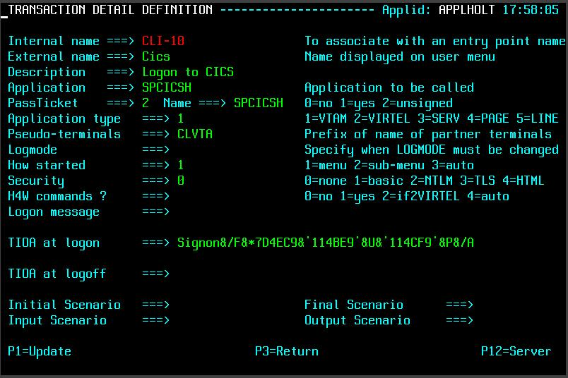
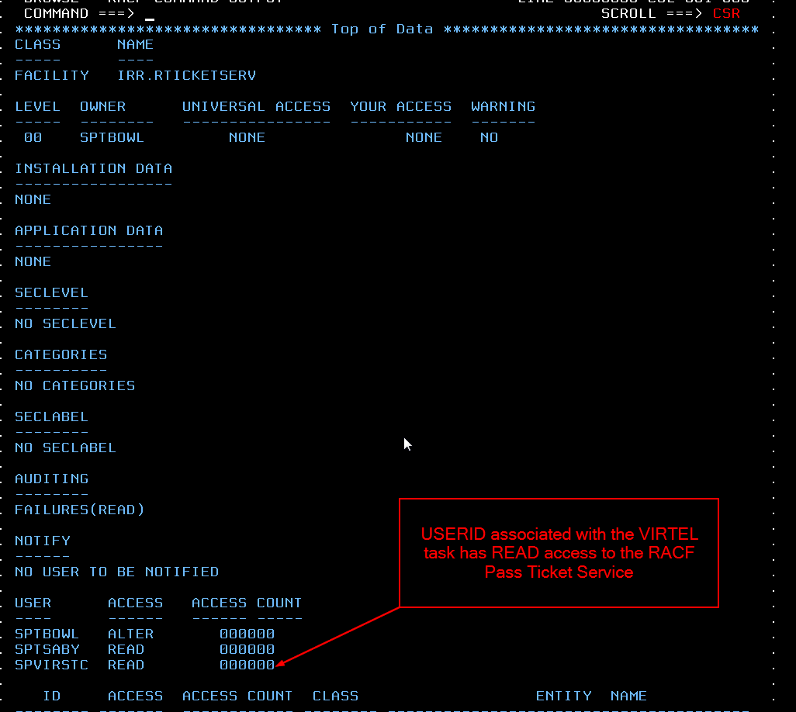

Pass tickets and supporting Proxy Servers¶
These products provide an organization with a centralized enterprise-class secure single sign-on (SSO) and authentication system. The products tend to run on a server(s) and provides access to a business’s assets like web enabled applications or portals. The basic process is to trap the incoming HTTP call request and establish some user credentials before allowing access to an asset. For example, the user credentials can be extracted from the callers request or determined by the callers IP address. The credentials will be validated against a LDAP or similar active directory server. The result of the validation will either allow or deny the caller access to the requested asset. Security and asset control is managed by the SSO server which as a central server can validate credentials to all business assets, be it on the mainframe or other platforms. Userid and password administration for all assets can be controlled through the functions of the SSO software employed. Virtel will integrate within this SSO infrastructure and process sign on request once they have passed validation. Virtel provides its own validation of the SSO server through the use of rules.
In the example that follows we are using CA-Site Minder as an example SSO Server and we will document how to define Virtel to interface with the SSO Server and RACF. Our target asset is a CICS application called SPCICSH. The caller will provide no userid or password data.

Fig 1. Data flow of an SSO session setup
The initial request is passed through the SSO server. The server will trap and validate the caller. If the validation is successful a session will be establish between the SSO server and Virtel. Two things to note at this point. One, the IP address presented to Virtel will be that of the SSO Proxy Server and two, that the server will modify the HTTP headers to provide addition information, that being the source IP address and the user id.
A Virtel line trace will reveal these additional headers.
GET /w2h/WEB2SUB.HTML++VirtelSession=AFo0JQAAAAMeuCAo+disconnect=1?pf=DISCONNECT HTTP/1.1
Host: 192.168.170.30:41002
User-Agent: Mozilla/5.0 (Windows NT 6.1; WOW64; rv:27.0) Gecko/20100101 Firefox/27.0
Accept: text/html,application/xhtml+xml,application/xml;q=0.9,\*/\*;q=0.8
Accept-Language: en-gb,en;q=0.5
Accept-Encoding: gzip, deflate
Referer: http://192.168.170.30:41002/w2h/WEB2AJAX.htm+CICS
Cookie: SYSLANG=en; SYSSTYL=BLUE; SYSPAGE=auto
**SM_User: sptholt <<**
**X-Forwarded-For: 192.168.100.100 <<**
Connection: keep-alive
HTTP/1.1 200 Ok
Server: Virtel/4.53
Date: Wed, 26 Mar 2014 15:31:12 GMT
Content-type: text/html
Content-length: 00000125
<html><head><Meta HTTP-EQUIV="refresh" CONTENT="1; URL=LASTPAGE.HTML"></head>
<body bgcolor="black"><br>
<br>
</body></html>
HTTP/1.0 205 Reset Content
Server: Virtel/4.53
In the above trace the CA-SiteMinder specific header “SM_User” can be seen as identifying the userid and the X-Forwarded-For:, a standard HTTP header, identifies the source IP address. For security reasons this proxy IP address must be tested for in a VIRTEL rule before the session can be established between the caller and the asset. There is no password associated with this logon – this will be generated via a PassTicket request on behalf of the userid identified in the “SM_User” header. The PassTicket will be created as part of the session setup between Virtel and the asset and on behalf of the caller.
Adding headers to the HTTP request.
Access the CICS application using FireFox. Use the FireFox “AddIn” Modify Headers to add the headers to the HTTP request. After adding the headers you will need to “START” the addIn to get the headers added.

When access the CICS system make sure the “Modify Headers” icon is started. It should be red.
The following definitions define what needs to be done to enable a user to log on without specifying a userid/password to an asset supported by the SSO server. In our example Virtel will logon to a CICS asset on behalf of the caller using a userid passed by the SSO Proxy and a generated PassTicket. The caller provides no userid/password information. Once the SSO has validated the callers credential the caller will be logged on to CICS and will be presented with the following screen:-
RACF Passtickets
Pass tickets are an alternative to passwords and can greatly improve the security surrounding SSO and multiple applications access. Passtickets are a dynamically generated password that lasts for approximately 10 minutes. Further information on RACF Passtickets can be found on the web. For the purpose of this newsletter we will look at the Virtel requirements needed to access our target CICS asset whose RACF APPL is SPCICSH. Our Virtel task runs under the RACF userid of SPVIRSTC. Here are the RACF definitions required to support the generation of PassTickets for the target application APPL SPCICSH.
Sample RACF job to define the RACF profiles.
This job will have to be modified to a customer’s RACF setup. Some profiles may already be defined! If the PERMIT statements do not run then that probably means that some of the RDEFINE entries already exist in the RACF database - these need to be removed, or an RDELETE added to delete the profile entry, in order for the job to complete successfully. It should produce a RC=0. See the output in SDSF.
//STEP1 EXEC PGM=IKJEFT1A,DYNAMNBR=20
//SYSTSPRT DD SYSOUT=*
//SYSTSIN DD *
SETROPTS CLASSACT(APPL)
SETROPTS CLASSACT(PTKTDATA)
SETROPTS RACLIST(PTKTDATA)
SETROPTS GENERIC(PTKTDATA)
RDEFINE FACILITY IRR.RTICKETSERV
RDEFINE PTKTDATA IRRPTAUTH.SPCICSH.\* UACC(NONE)
RDEFINE PTKTDATA SPCICSH SSIGNON(KEYMASKED(998A654FEBCDA123)) +
UACC(NONE)
PERMIT IRR.RTICKETSERV CL(FACILITY) ID(SPVIRSTC) ACC(READ)
PERMIT IRRPTAUTH.SPCICSH.\* CL(PTKTDATA) ID(SPVIRSTC) ACC(UPDATE)
SETROPTS REFRESH RACLIST(PTKTDATA)
SETROPTS REFRESH RACLIST(FACILITY)
Three distinct RACF profiles are required to use RACF pass tickets:-
FACILITY IRR.RTICKETSERV * Can use PassTickets *
PTKTDATA IRRPTAUTH.passTicketName. * Let’s VIRETL generate PassTickets on behalf of an application for all users. * or *userid*
PTKTDATA profile_name * APPLNAME used by RACROUTE REQUEST=VERIFY *
Virtel Name correlation
- passTicketName must equal the PassTicket Name defined in the VIRTEL transaction.
- profile_name must equal the VTAM application name defined in the VIRTEL transaction.
These names are normally the same, but they do not have to be. See the “**RACF profiles related to Pass Tickets**” section for further information.
Note
If you are running separate RACF databases across LPARS the KEYMASKED must be the same in each RACF database or else the wrong password will be generated and the logon will fail.
Virtel Requirements
The Virtel Transaction, under Entry Point CLIWHOST, that we will use to access the CICS asset has an external name of “Cics”. We modify our transaction to use pass tickets and add a TIOA to logon to our CICS transaction. The transaction details look like:-

The PassTicket option is set to 2 and uses the APPL name associated with CICS transaction. Using 2 means that we do not have to sign onto Virtel first before generating a PassTicket. Virtel will expect the System variable USER to be established. This will be accomplished in an identification scenario where we have access to the SM_User header value. See the section on Identification Scenario.
The TIOA sign on field waits for the initial CICS sign on screen to appear and then plugs in the userid (&U) and PassTicket generated password (&P) into their respective locations. The screen is then “entered” and returned to the application.
Identification Scenario
To obtain the “SM_User” value and set the userid in the System USER variable an identification scenario is used. The following is an example:-
SCENSITE SCREENS APPL=SCENSITE,EXEC=NO
*
* SCENARIO for SiteMinder
*
* The purpose of this scenario is to retrieve the contents of
* the identification headers inserted by the SiteMinder Proxy
*
SCENARIO IDENTIFICATION
*
COPY$ SYSTEM-TO-VARIABLE,VAR='USER', -
FIELD=(TCT-HTTP-HEADER,SM\_USER)
IF$ NOT-FOUND,THEN=NOUSER1
COPY$ VARIABLE-TO-SYSTEM,VAR='USER', -
FIELD=(NAME-OF,USER)
*
EXIT1 DS 0H
SCENARIO END
*
NOUSER1 DS 0H
ERROR$ 0,'SCENSITE ERROR: NO USER VARIABLE'
GOTO$ EXIT1
SCRNEND
END
This SCENARIO has to be set in the Entry Point definition for the line being used. In our case this is the default Entry Point, CLIWHOST, associated with the external line HTTP-CLI. The following is a snapshot of the entry point definition:-
The Identification Scenario field is filled in with the name of our scenario SCENSITE. This scenario is called when the inbound call is assigned to an entry point and before any transactions are invoked. The scenario sets the system USER variable which will be used in the PassTicket generation.
TCT Considerations
The TCT has to include the following parameters if HTTP User Headers and PassTicket generation is required. The parameters are:-
HTHEADR=(SM_USER), *
VIRSECU=YES,SECUR=(RACROUTE,RACF), *
RAPPL=FACILITY,RNODE=FACILITY,PRFSECU=SPVIREH, *
PASSTCK=YES, *
The HTHEADR identifies the “SM_USER“ as a non standard header and one that Virtel must process. The PASSTCK keyword enables Virtel to generate PassTickets.
Line Rules
To ensure that the source proxy IP address is valid we can code some rules and associate them with the line. In our example we have coded two sets of rules. The first one will test the calling proxy IP address. If that is successful the connection will continue and establish an association with the named entry point. If the first rule fails because the IP address doesn’t match what we expect, the second rule will be called. This does no more than establish an entry point with a default transaction. The default transaction will just returns an error page to the browser. Here are the two rules that we have associated with our Virtel line:-
Rule 1 – C100PROX.
If the IP address of the SSO Proxy matches the Caller DTE address we have specified in the rule than the Entry Point CLIWHOST will be associated with line and the transactions defined under that entry point can be invoked. If the address match fails then the next rule will be called. In our case this will be rule C999REJ.
Note. It is important that you use option 3 “STARTS WITH” when defining the Calling DTE option.
Rule 2 – C999REJ.
This rule does no more than to establish the entry point EPREJECT. EPREJECT will have a default transaction which just returns an error page to the caller.
RACF Profiles related to Pass Tickets.
As mentioned RACF needs to be set up to allow Virtel to use Pass Tickets. The first profile is the FACILITY Class profile with the IRR.RTICKETSERV name. The Virtel STC userid must have READ access to this profile.

RDEFINE FACILITY IRR.RTICKETSERV
PERMIT IRR.RTICKETSERV CL(FACILITY) ID(SPVIRSTC) ACC(READ)
To allow Virtel to generate Pass Tickets for a particular application we must define any entry in the PTKTDATA class. This entry has the name IRRPTAUTH.passTicketName.* and is a Group Entry. The Virtel USERID should have update authority to this profile.
RDEFINE PTKTDATA IRRPTAUTH.SPCICSH.\* UACC(NONE)
PERMIT IRRPTAUTH.SPCICSH.\* CL(PTKTDATA) ID(SPVIRSTC) ACC(UPDATE)
SSIGNON(KEYMASKED(998A654FEBCDA123)) UACC(NONE)
The name in IRRPTAUTH.passTicketName.* profile must match the name in the Virtel Transaction definition. The PassTicket Name is the name of the application as known to RACF for the generation of Passtickets.
This may be different to the VTAM application name.
Finally, define a PTKTDATA profile entry that matches the Virtel Transaction APPLICATION name. In this case it is SPCICSH. Virtel passes this APPLNAME to RACF via a RACROUTE REQUEST=VERIFY.

RDEFINE PTKTDATA SPCICSH SSIGNON(KEYMASKED(998A654FEBCDA123)) +
UACC(NONE)
The key thing here is that the PassTicket name must tie up with the generic IRRPTAUTH.SPCICSH.* entry and the VIRTEL application name must match the descrete PTKTDATA.SPCICSH profile. They can be the same but needn’t be!
Common Errors
Message VIR1502E
Meaning
VIRTEL does not have sufficient access rights to create or validate a passticket allowing user userid at terminal termed to access application applname. This message is usually preceded by message ICH408I which shows the name of the resource to which VIRTEL must be granted access.
Action
Examine the SAF and RACF return codes and the RACF reason code to determine the cause. Check that VIRTEL has access to resource IRR.RTICKETSERV in the FACILITY class, and also to resource IRRPTAUTH.applname.userid in the PTKTDATA class. The generic resource IRRPTAUTH.** may be used to permit VIRTEL to generate passtickets for all applications.
For an explanation of the return codes and reason codes, see z/OS Security Server RACF Callable Services chapter 2 “R_ticketserv”. Some common codes are:
| SAF RC | RACF RETC | RACF Reason | Description |
|---|---|---|---|
| 8 | 8 | 10 | VIRTEL is not authorized to generate passtickets, or is not autohorized to generate passtickets for this application. See preceding ICH408I message in the log. |
| 8 | 10 | 1C | There is no profile in the PTKTDATA class for this application or the PTKTDATA class is not active. |
References: